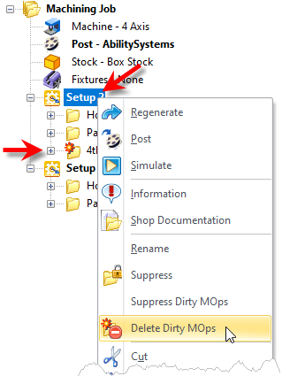
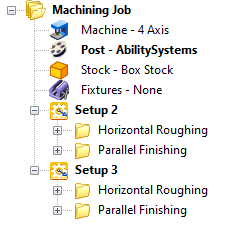
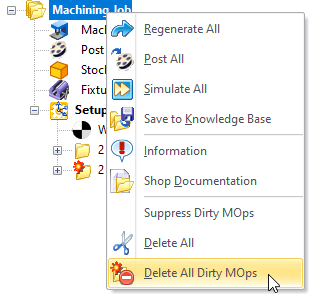

You can Delete all machining operations in a Setup that are flagged as dirty. This command can also be executed from right-clicking on the Machining Job to delete ALL dirty Mops in all Setups. Warning This a permanent operation and cannot be undone. Select the Setup, right click and select Delete Dirty Mops from the context menu.
 To Delete all Dirty MOps |
A Suppress operation will display in the Machining Job with the following icon:  All Dirty MOps are deleted |
Alternatively, you can right-click on the Machining Job and select Delete All Dirty MOps. As the name suggests, this will delete all mops in the Machining Job that are flagged as dirty.  Delete All Dirty MOps |